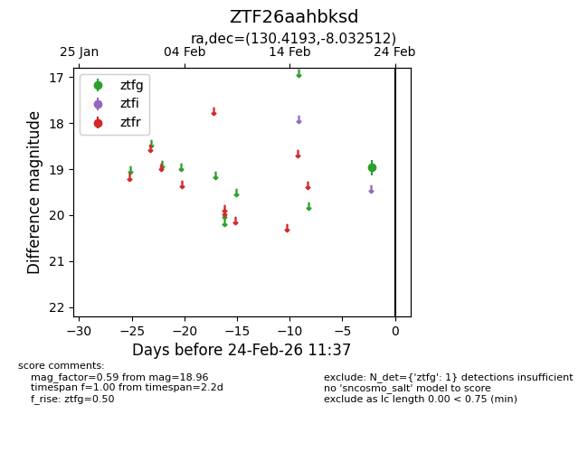
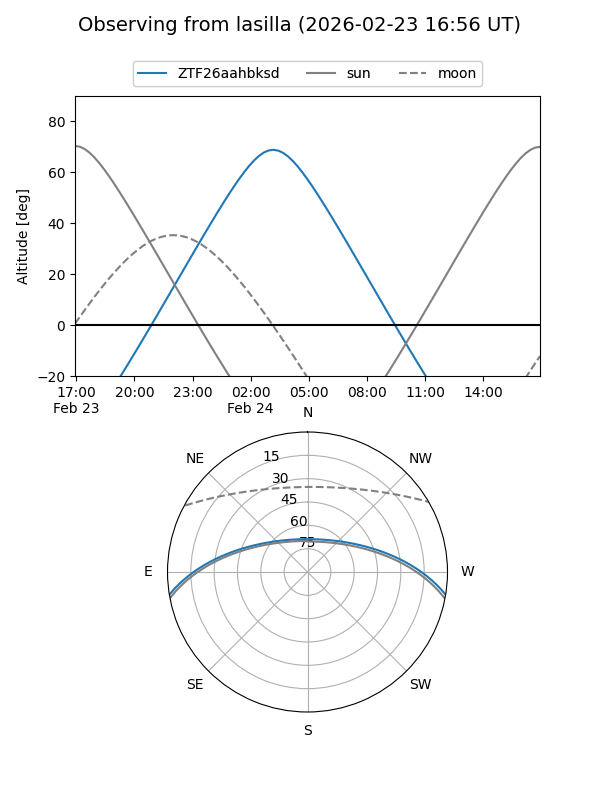
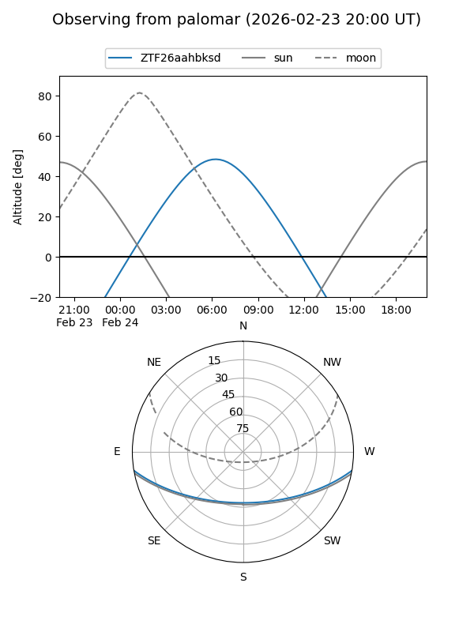

ZTF26aahbksd
Target ZTF26aahbksd at 2026-02-24 11:38
Aliases and brokers:
FINK: link
Lasair: link
ALeRCE: link
alt names
ZTF26aahbksd (ztf,fink_ztf)
Coordinates:
equatorial (ra, dec) = 130.4193,-8.03251
equatorial (HMS+DMS) = 08:41:40.64,-08:01:57.04
galactic (l, b) = (233.7210,+20.12189)
Flags:
Photometry:
last ztfg=18.96
1 ztfg detections
Lightcurve

Visibility


Additional plots